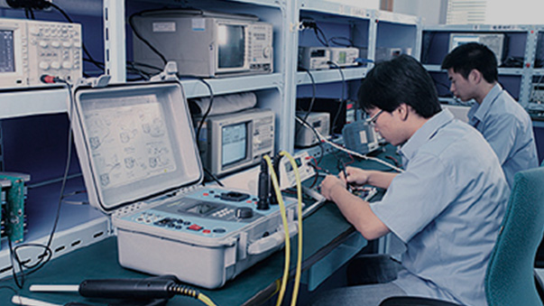

<section class="main">				
<div id="content">
	<div class="his_list">
        <dl class="ratio-img" data-ratio="0.2648">
            <dt>
                <ul>
                    <li class="on ratio-img" data-ratio="0.5622"></li>
                    <li class="ratio-img" data-ratio="0.5622"></li>
                    <li class="ratio-img" data-ratio="0.5622"></li>
                    <li class="ratio-img" data-ratio="0.5622"></li>
                    <li class="ratio-img" data-ratio="0.5622"></li>
                </ul>
            </dt>
            <dd>
                <ul>
                    <li><em></em>
                        <h3 class="fnt_24">1995年</h3>
                        <div class="his_list_p"><p>与青岛缝纫机厂合作开发成功中国第一台GY612型多头多色电脑刺绣机。</p></div>
                    </li>
                    <li><em></em>
                        <h3 class="fnt_24">1996年</h3>
                        <div class="his_list_p"><p>与青岛缝纫机厂合作开发成功中国第一台GY612型多头多色电脑刺绣机。</p></div>
                    </li>
                    <li><em></em>
                        <h3 class="fnt_24">1997年</h3>
                        <div class="his_list_p"><p>GY612型多头多色电脑刺绣机通过轻工部的鉴定，成为国家级新产品。<br>拥有自我知识产权的BECS-03型刺绣机用电控正式推向市场，结束了中国电脑刺绣机从国外进口的历史。</p></div>
                    </li>
                    <li><em></em>
                        <h3 class="fnt_24">1998年</h3>
                        <div class="his_list_p"><p>大豪的前身—北京一轻研究所“电脑刺绣机课题组”成立。</p></div>
                    </li>
                    <li><em></em>
                        <h3 class="fnt_24">1999年</h3>
                        <div class="his_list_p"><p>与青岛缝纫机厂合作开发成功中国第一台GY612型多头多色电脑刺绣机。</p></div>
                    </li>
                    
                </ul>
            </dd>
        </dl>
    </div>
	  
</div>	
</section>